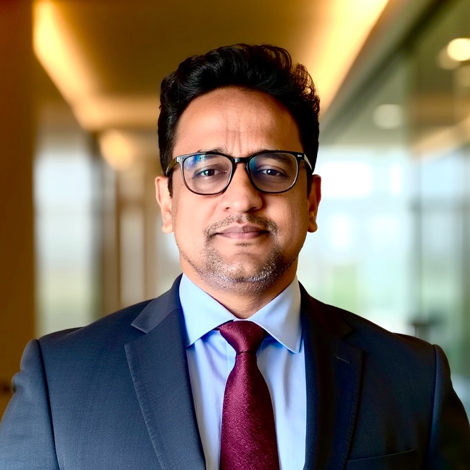

SHAJI CHITTODAN
Founder & Managing Director · Zephyr FZE
Bridging 18 years of commercial logistics in the UAE with autonomous enterprise AI workflows, Model Context Protocol tooling, and practical agent architectures.

GROUNDED IN INDUSTRY
Artificial intelligence produces measurable business return only when built by practitioners who understand operational realities: freight contracts, RFQs, customs clearance, and margin protection.
THE DUAL ADVANTAGE
For 18 years across Dubai, I negotiated air and ocean freight agreements, serviced high-demand clients in the Oil & Gas and Marine sectors, and handled operations inside key trade hubs like DAFZA and Jebel Ali.
Today, through Zephyr FZE, I translate that practical operational experience into software. Rather than building theoretical AI experiments, we build agents and automations that resolve daily enterprise bottlenecks: validating live tariffs, verifying bill-of-lading documents, interpreting vehicle maintenance codes, and generating quotes in seconds.
"AI that understands how your business actually runs. We start from your operations, not the latest tool. We speak the language of shipments, quotes and tight deadlines."
— Shaji Chittodan, Zephyr FZE (zephyrfze.ae)ENTERPRISE CAPABILITIES
Practical AI deployment delivered through modern agent frameworks, workflow orchestrators, and enterprise model context protocol servers. Discover our commercial offerings on zephyrfze.ae.
AUTONOMOUS MCP AGENTS
Standardized, secure tool-calling architecture connecting foundational models to ERP databases, ocean freight tariffs, warehouse telemetry, and CRM pipelines. Creating autonomous decision engines that operate within verifiable business boundaries.
N8N PIPELINES
Engineering end-to-end multi-step pipelines. Automating RFQ extraction from incoming emails, pricing validation against carrier rates, CRM customer terms verification, and quote generation without human latency.
VOICE AGENTS
Deploying voice-driven interfaces for field operations, logistics dispatching, and rapid customer status inquiries. Real-time audio pipelines capable of updating operational databases via conversational instructions.
INTERNAL PORTALS
Delivering executive portals, operational dashboards, and customer-facing interfaces in days rather than quarters. Bridging legacy shipping databases with responsive, secure internal web applications.
EXECUTIVE ADVISORY
Advising executive boards and operational teams across the UAE on practical AI adoption. Identifying high-leverage automation targets, preventing costly platform lock-in, and training staff on prompt engineering.
OPERATIONAL WORKFLOWS
Examine how Zephyr FZE orchestrates artificial intelligence inside real enterprise workflows. Select a workflow below to inspect its data flow.
In freight forwarding, quotation teams spend hours copying origin-destination pairs between emails, spreadsheets, carrier port portals, and CRMs. By the time a quote reaches the customer, spot ocean rates may have shifted.
INBOUND RFQ PARSED
LLM agent extracts container count, IMO cargo class, Port of Loading (Jebel Ali), and Port of Discharge.
LIVE CARRIER QUERY
Agent calls MCP tool to query carrier contract rates, verify validity dates, and read credit terms from CRM.
MARGIN LOGIC
Automated rules apply tiered margin schedules. Quotes exceeding risk thresholds trigger executive review.
DELIVERY
Branded quote sent to customer in under 45 seconds, with deal record automatically updated in ERP.
Fleet sensors trigger hundreds of diagnostic warnings weekly. Without automation, maintenance schedulers miss critical engine fault codes until an asset breaks down mid-transit.
TELEMATICS WEBHOOK
Vehicle telematics pushes J1939 engine diagnostic code via webhook to n8n listener pipeline.
BULLETIN SEARCH
AI agent cross-references manufacturer technical bulletin to evaluate failure severity and road-safety impact.
PARTS RESERVATION
If code indicates critical transmission wear, agent generates workshop maintenance ticket and checks spare parts inventory.
DISPATCH ROUTING
Dispatch console updates fleet status automatically; driver receives SMS route redirect to service bay.
Offshore oil and marine shipments require exact alignment across material safety data sheets (MSDS), commercial invoices, and customs manifests. Any discrepancy triggers port detention penalties.
DOCUMENT PARSING
Vision LLM ingests supplier PDF bills of lading, packing lists, and chemical safety data sheets.
DISCREPANCY AUDIT
Agent validates UN dangerous goods numbers, gross weight conversions, and consignee tax IDs across all forms.
CUSTOMS CHECK
System verifies documentation requirements against UAE Ministry of Energy & Infrastructure guidelines.
CLEARANCE PACK
Verified documentation package delivered to customs clearance agents with full discrepancy audit log.
CAREER CHRONOLOGY
Over eighteen years in commercial business development across UAE shipping, freight forwarding, and enterprise technology.
FOUNDER & MANAGING DIRECTOR
Established Zephyr FZE (zephyrfze.ae) to build autonomous agent infrastructure, custom n8n workflow automations, and enterprise AI training for businesses across the UAE and GCC. Licensed in Sharjah Publishing City Free Zone (Licence 4432384.01).
BUSINESS DEVELOPMENT MANAGER
Directed strategic commercial expansion and revenue growth across the Middle East. Concentrated on high-value client acquisitions within the offshore marine and Oil & Gas sectors, overseeing complex tender submissions and logistics contract execution.
BUSINESS DEVELOPMENT MANAGER
Led commercial development across Air Freight, Sea Freight, and end-to-end multimodal logistics solutions. Maintained regional corporate client relationships and navigated volatile supply chain markets.
SALES MANAGER
Managed key multinational corporate accounts within the Dubai Airport Freezone (DAFZA). Maintained client retention rates and structured custom warehousing, cross-docking, and distribution agreements.
TERRITORY MANAGER
Grew regional territory market share through proactive corporate prospecting, client executive presentations, contract bidding, and tariff negotiations for courier and cargo operations.
CREDENTIALS & EXPERTISE
A foundation combining formal management education, engineering studies, and continuous certification in modern AI frameworks.
ACADEMIC DEGREES
Specialized in multinational commercial trade, global finance, international supply chain dynamics, and strategic market expansion.
Rigorous mathematical and engineering grounding in telecommunications, digital electronics, microprocessors, and network protocols.
PROFESSIONAL CREDENTIALS
Advanced methodologies in generative AI, prompt engineering, agentic workflow automation, and enterprise deployment.
Implementation of standard protocol adapters connecting Large Language Models to databases, toolkits, and external APIs.
Macroeconomic analysis, pricing strategies, market structures, and capital allocation for corporate leaders.
Enterprise systems infrastructure, directory services, and network security administration.
MARITIME HERITAGE
From the historic wooden dhows of Dubai Creek to modern automated deepwater container berths, Dubai has always led international commerce through adaptability. Zephyr FZE applies that same ethos to the frontier of generative AI and future autonomous robotics.
INITIATE DIALOGUE
Whether you are looking to deploy autonomous AI agents across your supply chain, automate manual RFQ workflows with n8n, or arrange executive AI advisory for your leadership team, let us evaluate the practical business case.